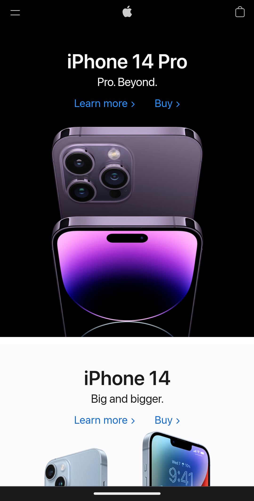

Hick's Law
Apple
Their Website Hick's Law is a law based around decision making. I think that this is very interesting. It explains that inorder to get a faster decision-making process, you must first reduce the number of stimuli present. One example that I thought of was the Apple website. They have reduced the stimuli on their front page so that it has become VERY easy for the user to quickly decide on which one of Apple's new products the user would want to look into.
PARC: Contrast
Full Time Game Dev
Their WebsiteContrast is part of how the web page is presented. A good web designer will know how to catch the attention of the audience just by the choice in color used. Obviously, the biggest contrast in color you can have is between white and black. However, there are more ways to effectively direct the audiences attention. I feel that Full Time Game Dev has done a great job at directing the audience's attention by only using color.
White Space and Clean Design
Squarespace
Their WebsiteWhite space and clean design can be a big appeal for most people. It makes the web page look clean and well kept. It can also help the user feel less overwhelmed. Some websites have too much going on and the user could feel lost in the page. With clean design, you are able to make the purpose of the page well known. Squarespace does a fantastic job with this. Their page's design is very sleek and almost elegant. You know exactly what they do right from the start. This is all possible because of clean design and the use of white space.